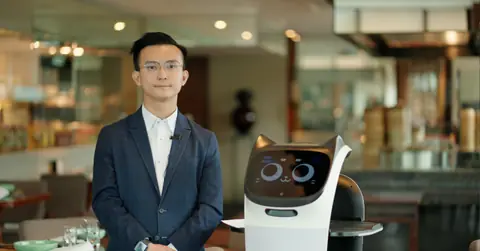

01
請人難、留人難
餐飲、酒店及零售的樓面與後勤職位流動大，空缺長期補不上。
BottiZ 如何協助由機械人分擔固定而重複的工序，現有員工減少超時與頻繁補位。
請不到人、留不住人，是不少商戶的日常。BottiZ 讓您先在實際場地試用機械人，看到成效才決定租賃或買斷。
BottiZ 先了解營運中最耗人手、最難請人的環節，再按場地與預算建議合適的機械人與使用方式。
餐飲、酒店及零售的樓面與後勤職位流動大，空缺長期補不上。
午市、晚市及旺季客量集中，人手調度緊張，服務容易受影響。
場地、動線與營運習慣各有不同，單看規格難以判斷是否合適。
新設備進場，員工擔心多了工作，客人也未必熟悉。
以下以餐飲與酒店為例，示範機械人在一天營運中的角色。
後廚備餐時，炒餸機械人分擔重複的烹調工序，廚師專注備料與品質。
送遞招待機械人把餐點送到枱邊，樓面同事專注接待與落單。
酒店的客房用品、毛巾與補給由配送機械人跨樓層運送。
員工處理客人需要與收尾工作，機械人完成最後一輪送遞。
可先按餐飲及酒店常見任務了解應用方向，再查看對應機型與示範安排。
三種方式各有適合的情況，具體條款以書面方案為準。
| 項目 | 先試 | 租賃 | 買斷 |
|---|---|---|---|
| 適合情況 | 想先在自己場地看實際效果 | 想分攤初期投入，按需要調整 | 使用模式穩定，希望長期自有 |
| 開始方式 | 預約勘察與示範，再安排試用 | 確認機型組合後，按方案安排 | 確認機型與配置後，按方案安排 |
| 費用安排 | 度身報價，歡迎 WhatsApp 查詢 | 度身報價，歡迎 WhatsApp 查詢 | 度身報價，歡迎 WhatsApp 查詢 |
輸入現有人手、平均月薪及擬由機械人分擔的工序比例，粗略估算每月節省與回本期。數字由您輸入，結果僅供參考，實際視場地而定。
從了解營運需要、勘察場地，到實機示範、員工培訓及售後保養，BottiZ 協助商戶按實際情況逐步開始。
以下機型涵蓋餐飲及酒店的常見需要，規格及詳情請查看各產品頁。


機械人分擔重複工序，讓員工把時間用在服務客人上。
固定而重複的工序由機械人承擔，員工不必長期超時補位。
送遞與招待有機械人協助，樓面同事更能照顧客人。
在自己的場地先看效果，再討論租賃或買斷。
按設定流程運作，有助保持穩定的出品與送遞安排。
配合回本期估算，更清楚投入與節省的關係。

可以。落地流程由場地勘察與實機示範開始，確認合適後再討論試用、租賃或買斷，具體安排以書面方案為準。
按場地、機械人數量及使用模式度身報價。您可以 WhatsApp 或預約免費諮詢，團隊了解需要後會提供方案。
可使用「人手成本與回本期估算」工具，輸入人手、月薪及機械人分擔的工序比例，粗略了解每月節省與回本期。結果僅供參考，實際視場地而定。
餐飲有 G2、G3、G5 AI 炒餸機械人及 KettyBot 送遞招待機械人；酒店可考慮 W3 梯控配送機械人。實際組合視乎場地與需要。
BottiZ 的定位是分擔重複工序，讓員工專注服務客人。建議在導入前讓團隊參與示範，了解各自的分工。
清潔、運送與接待佔去教職員大量時間。
了解學校及教育方案 →人手難請，公共空間人流複雜。
了解物業管理方案 →搬運與配送佔去護理人員照顧的時間。
了解醫療及院舍方案 →巡邏範圍大、夜更長，容易疲勞與遺漏。
了解保安及巡邏方案 →入伙後才發現電梯、通道及充電位沒有預留。
了解發展商方案 →告訴我們行業、場地與人手情況，團隊會先了解需要，再建議機型組合與示範安排。
為教育、商業、醫療及基礎設施提供清潔、配送、接待、教學及巡邏等全場景機械人整合方案。